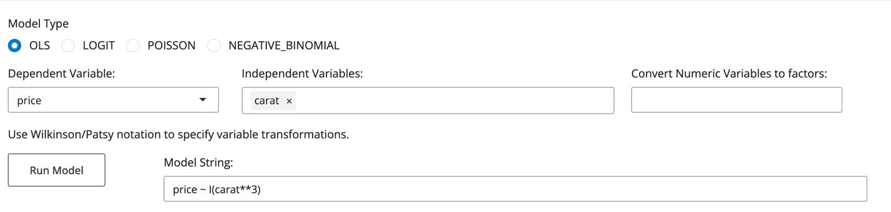

plotit() Introduction
plotit()
is a Shiny app for data modeling and visualization distributed via shiny live. Its
intended purpose is to facilitate exploratory data analysis. You can test it at https://jm-rpc.github.io/plotit/ . If you're still reading, I probably
don't need to extoll the virtues of the Shiny Live deployment strategy. This
project started as mostly a proof-of-concept exercise. And then got completely
out of hand. Fair warning: this code is fairly new so it is buggy, use at your
own risk.
Having
said that, plotit offers a minimalist and fairly easy to use interface (well,
easier than doing everything from the command line), and will accommodate
relatively large datasets. As far as
possible, plotit repackages off-the-shelf functions from common python sources
(seaborn, statsmodels, scipy, among them) while at the same time trying to keep
the number of required packages within reason (and within ShinyLive's
limitations).
Design
priorities for plotit() were simplicity, scalability, and model
agnosticism. It does not try to fit the data into a fixed
format but offers some standard statistical graphics and models for the user to
try. Part of model agnosticism is a low
guardrails approach to interface design.
Plotit() will not suggest analysis and will try to do whatever you
specify, even if what you specify doesnt make sense.
Exploratory
data analysis often involves imperfect or incomplete data. Careful attention was paid to handling
missing data. Rows with missing data (NaN's or na's in python) are not dropped
on input unless specifically requested. At any point where we need to drop rows
containing missing data, only the rows that are missing data in the currently
active columns (either being displayed or part of a linear model) will be
dropped. This means, for example, that when you use a variable to color a plot
there may be a NA category (if the color variable has more missing data than
the plotted data). You can remove rows
with missing data either globally on input or using the subsetting feature one
variable at a time.
Moderate
scalability is achieved by using the python/numpy/pandas/statsmodels libraries and
avoiding duplication in coding. Ones
expectations of scalability must be tempered by the limitations of the Shinylives
Python/WASM/Shiny architecture. I have
tested parts of plotit() with data sets up to about 15 of million rows. At the
10M+ rows level, it is annoyingly slow, but seems to work after a fashion. One great advantage of the html based
interface is that plotit() can easily work in tandem with either Excel, R or
Python. While the programs cannot share
namespaces, they can share .csv files.
So one can easily imagine using Python or Excel to transform variables,
and plotit() to do graphics and modeling.
Scalability
concerns are most tangibly reflected in the interface design. The standard reactive UI framework defaults
to recalculating all dependencies every time one reactive variable
changes. For example, coded most
naively, a histogram display that allows the user to control the number of
bins, range, titles, colors, etc. would update the display every time a choice
of one of the controls is made. This
yields a very responsive feeling interface but, can cause many needless
recalculations of a display (as well as race conditions in the interface
update). To avoid this, where possible plotit() has update buttons allowing
the user to make multiple selections before a display update. This
leads to a somewhat slower interface and sometimes old plots linger longer than
one would like, but saves a lot of computation. If you find a lingering graph
annoying, clicking Update usually dismisses it.
Here's
what plotit will do in order of the interface tabs:
1)
Plotting: This tab controls selecting a data file and basic
plotting.
a)
Input: Open a .csv file of data from its local computing
environment and give a simple summary of the data in the file. plotit will also
try to open Stata .dta files. The .dta input sometimes fails.
b)
Plotting: User chooses variables (X, Y, Z, and a color variable),
and type of plots: a. One variable (x only): Histogram, Box Plot, KDE b. Two
variables (x and y): 2D scatter plot with coloring, trend confidence intervals.
Three variables: interactive 3D plotting with plotly (am working on how to use
rgl widgets to support matplotlib interactive 3D, so far no luck). Response
surface and confidence intervals are available for 3D scatter plots.
i)
Trends/response surface:
In order to graph a trend line (in 2D) or a response surface (in 3D) you
will need to fit a model from the Linear Models tab. If you have fit a model and Model Data is
selected, options for plotting the response surface or trend line for models
with one or two independent variables will appear.
2) Plot Tools: As the name suggests this tab collects some
extra tools for plotting: filtering the data, adding titles and changing axis
ranges and adding additional variables to the plot.
a)
Filters: For variables with fewer than 25 or so unique
values, choose subsets based on the outcomes of the variables. You can subset
on more than one variable. The 25 unique value limit can be changed. Once you choose a subset of rows, all
plotting choices apply to the chosen subset of data. You can release subsetting
and go back to the original data set by setting the Filter On choice to -. If you wish to save a subset of the data you
can choose Save Plotting Data and plotit() will save the data in a file. For
numerical variables you may also subset by values: you can set an upper and/or
lower bound and drop rows for which the entry in a particular column falls
outside of the specified bounds (Use this carefully!).
b)
Plot Customization: allows you to plot up to 6 more
variables in either the two dimensional (Y1, Y2, and Y3) or the three
dimensional scatter plot (Z1, Z2, and Z3).
This is often useful for displaying multiple related time series. This
tab also allows you to set the significance level to be used in reporting
statistical results. You can also change the ranges of the axes. More overrides will be added to this tab (for
example custom axis labels).
3) Data View: This tab offers three different views of your
data. First a list of column names and
data types, second a summary of the data (# of observations, 75%-ile, median,
25%-ile, mean, standard deviation for numerical data, counts, number of unique
outcomes for non-numeric data) and finally a scrollable spreadsheet view of the
data. Of course, a detailed data table
is unwieldy for large data sets and even a summary is time consuming for very
large data sets, so as the data set gets larger less information is displayed. To explore a data set in detail, the
pivoter() app is probably a better tool.
4)
Correlations: Creates a grid of scatter plots and calculates Pearson
correlations for chosen variables.
5)
Linear Models: fit ordinary least squares, logistic regression, Poisson
regression or negative binomial regression. If a subset has been chosen in the plotting
tab the linear model tab will fit the model to the subset that subset of data.
Always check the number of observations!
- After fitting a model, go back
to the plotting page and you will see a new option chosen for data called
Model Data. You will be able to
explore your model, residuals, predictions etc. Note that if the model was fit on a
subset of rows, all non selected rows will be dropped from the model data
and subsetting information will be lost.
If you want to save the subset of data you fit the model on,
choose Download Data Set on the Linear Models tab after running the
model.
- Switching back to Input Data
will cancel all subset selections and return you to your original data
set.
- The Clear Model button will
also forceably clear the model and return you to the input data.
6)
Linear models: Standard Plots: a collection of
standard plots for linear model diagnostics: ROC curve for logistic regression,
leverage and influence for linear regression, Poisson and negative binomial.
Scatter plots against independent variables, and partial regression plots are
included as well.
7)
Log: plotit() keeps a log of everything it does, you can
download the log whenever you want to document your modeling efforts.
Things
I intend to add
- Predictions using new data
- Maybe take requests for features......
- As always, polite bug reports are appreciated. Suggestions for how
to improve the code are greatly appreciated and will be cited if used.
Gripes about my awful programming style are not appreciated (I already
know this).
A Quick Introduction
Correlation
You start plotit() by typing https://jm-rpc.github.io/plotit/ into any browser. This will download plotit() to your browser
where it will run locally courtesy of the wizardry of ShinyLive. For mor on Shiny and Shiny Live check out https://shiny.posit.co/py/
After about a minute or two pl otit() will start and you
will see a pretty standard interface.
Starting at the top is a navigation bar that moves between
7 tabs. The first tab is called
Plotting and contains the basic data reading and plotting features. Choosing Browse will start a familiar file
selection dialog that allows you to read either a .csv (currently preferred) or
a .dta (Stata data file). In this case
well select the Admissions data. In the file Admission.csv. Once the file is
successfully read in you will see:
If you click on the Data View tab you will see:
Followed by
And then followed by:
The first table tells you the name of each column (or
variable), the number of non-null entries in the column and the type of each
column of (integer, floating point, or object (which usually means
strings). The second table summarizes
the data (for numbers: mean, median, max, min, standard deviation, and quartiles)
for non-numerical data the number of different outcomes). The third table is a scrollable
spreadsheet-like grid that allows you to inspect the data. As your input data file gets larger, fewer of
these tables will be presented. In this case I used a publicly available data
set relating GPA, GRE score and candidate rank to graduate admissions
outcome.
Some of your data may be numerical and some
categorical. Categorical data can be
numbers (like quarter of the year: 1, 2, 3, 4) or strings (like Winter,
Spring, Summer, Fall. In order to
plot your data on a graph, we require numerical data. However, we can use categorical data to do
other things like color the dots in a scatterplot, or to create a boxplot of
some measurement for each outcome of a
categorical variable.
The next panel gives you the opportunity to explore correlations
between numerical variables. Click on Correlations to see it. Click on the apparently empty box to choose
the set of variables from which to compute pair-wise correlations and display
scatterplots.
You should get a picture fairly immediately. The variables
you choose will be displayed in the Selected variables box. Something like this:
Histograms, 2D Scatter Plots, 3D Scatter Pots, Dot Colors
Moving back to the plotting panel reveals a wealth of
options for displaying data.
Starting at the top row, the boxes allow you to specify
which variable goes on the x axis, the y axis and (for 3D scatter plots) the z
axis. The Update button displays what
you have chosen, the Save Plotting Data makes a csv file of the data used to
create the plot. As you fill in the
variables, the plotting options will change.
Filling in only the x variable triggers histograms, box plots, and kde
plots. Filling in x and y variables
triggers 2 dimensional scatter plots, adding a z variable will switch the plot
to a 3D scatter plot.
On the tab labeled Plotting Tools you will find options
to filter rows out of the data set base on the values of either a numerical
variable (Range Filter) or a non-numerical variable (Categorical Filter). A range filter specifies a range of variable
outcomes for a numerical variable and filters out all rows that do not
correspond to values in that range. A
categorical variable allows you to filter
our rows based on the outcome of a discrete (numerical) variable or a
string variable. Currently you can
filter on any variable that has 25 or fewer outcomes (either numbers or
strings). The values corresponding to
the included rows will magically appear in the adjacent box. A log of all chosen variables appears below. If you choose to filter on - (either range or category) then the corresponding
filter will be undone.
Below the filtering options are some plotting options which
allow you to change the plot title and the ranges for the x, y and z variables
(plot customization). If you would like
to plot additional Y variables (for 2 D scatter plots) or Z variables (for 3D
plots) you can specify them in the Additional Data Series section.
The easiest way to learn how to use plotit() is to play
with it. Suppose we would like to know
if there is a relationship between GPA and rank. Lets start with a histogram of GPAs:
Now lets color the histogram using rank numbers correspond
to higher GPAs. Click on Color with:
and choose rank.
I find this histogram a little hard to interpret. Lets try boxplots
Much better!
Applicants who got a rank of 1 had the highest median GPAwhich makes a
certain amount of sense.
Lets try a scatter plot to see if there is a relationship
between GPA and GRE score. We get the
delightfully complex scatter plot below.
GPA is on the X axis, GRE score on the Y axis and the dot colors
correspond to the ranking of the applicants.
Once you have a
colorful scatter plot its natural (at least natural for me) to ask for a trend
line. To do that we need to specify a
model, which we will do in the next section.
Before leaving this topic, suppose that we would like to look
at the relationship between GPA and GRE score for just applicants who are rated
either 1 or 2. We want the same plot
with ranks 3 and 4 removed. Move to the Plotting Tools tab. You will see
this:
In the first box
under Categorical Filter: choose rank and in the box entitled Included
Rows: drop 3 and 4.

You can then return to the Plotting Tab and plot just the
data corresponding to applicants ranked 2 and 3.
Linear Models: Simple and Multiple Regression
Suppose we would like to estimate a linear model to predict
gre score from gpa score for applicants of all ranks. First unset the filter by choosing - in the
Filter on: choice box. We would like a
standard OLS model with all the usual statistics (coefficient estimates,
t-statistics on the estimates, p-values, R2 ,etc.). Move to the Linear Models tab choose OLS set
gre as the dependent variable and gpa as the independent variable.
If you hit Run Model you will get a regression report (in
the standard Python/R format). If you
had wanted a multiple regression model (for example, predicting gre from gpa
and rank) you could add variables to the Independent Variables: selection
box. On the far right there is a box
labeled Convert Numeric Variables to factors.
Any numerical variable with fewer than 25 outcomes can be converted into
a set of binary variables each binary variable indicating one outcome for all
but one outcome.
Lets do some graphics on our simple model. Switching back to the Plotting tab reveals
a some small changes in the interface.
There is a new data option Model Data which is
checked. This means that the data set
used to fit the model is the current plotting data set. If there were not missing data in your
original data set the Model Data will be the same as the original data with
columns for predictions, confidence intervals and prediction intervals
added. If your original data set had
missing data, there may be fewer rows in the Model Data if some rows had to
be removed because of the missing data in order to fit the model (this will be
documented in the log file). With this
caveat, we can now use the plotting capability to explore the model. If at any point you wish to drop back to the
original input data, simply go to the Plotting tab and choose Input Data

There are some new choices for X variables (and Y and Z
variables). The first new entry
Intercept is a column of all 1s representing the intercept of our regression
model. Intercept is followed by the
independent and dependent variables of the model (in this case gpa and gre)
followed by CI_lb, CI_ub, PI_lb, PI_ub.
These are the lower and upper bounds of the confidence and prediction
intervals for our model. Finally, if you
scroll down a bit you will see a variable Predictions which are the
predictions from our model.
Now choose gpa as the x variable and gre as the y
variable. A new option will appear on
the user interface.
When the x and y variables match the dependent and
independent variables of the model, a new option allowing to you show the
trend, confidence interval and prediction interval appears. It works the same way with linear models with
two independent variables, if the x, y, and z variables match the two independent
variables (x and y) and the z variable matches the dependent variable then you
will be able to plot the response surface, confidenct surfaces and prediction
interval surfaces. This also works for all
model types (OLS, LOGIT, POISSON, and NEGATIVE BINOMIAL).[1]
We can then continue to use the linear modeling and
plotting tools on the model data, each time we run a model the model specific
data (predictions and confidence intervals) will change to reflect the last
model estimated. If at any point we would
like to scrub the model and return to the original data (with no row filters)
simply choose Input Data on the Plotting tab.
Logistic Logit Regression
Pushing things a little farther, suppose that we would like
to predict the admissions success from GPA and GRE. We could try OLS, but the dependent variable
(admit) is binary. This calls for logistic regression. To fit a logistic regression proceed as
before but choose LOGIT, make admit
the dependent variable and gpa and gre the independent variables.
If we click on the next panel Linear Models: Standard
Plots you will see then ROC curve and the AUC for this model.
The other standard plots for logistic regression are the partial regression plot which is pretty
useless in a logistic regression and the graph of predictions against each
independent variable.
One non-obvious feature of plotit() is that you can use the
plotting tab on your model. If you move
back to the plotting tab plotit() will remember your model and allow you to
explore it graphically. Here is a
somewhat flashy example. Go back to
Plotting select Model Data at the top and ask for a 3d scatter plot by
selecting admit as the z variable and gre and gpa as the x and y
variables and click on show trend. To
push things a bit farther, use rank to color the dots. You should get something like this:
The surface in the middle is the predicted probability of
admission, the upper and lower surfaces are upper and lower 95% confidence
bounds for the predicted probability and the dots are colored by the ranking of
the applicant. Pretty cool, huh?
Another thing to do is to create a scatter plot of the
predicted probabilities, and then color the dots with the admit
variable. You can do this for gre and
gpa separately to get a visual picture of the predictive power of the two
variables. Heres the plot with gre
on the x-axis. This type of plot is very useful when you have many independent
variables in your model.
When you choose Model Data as your data source for
plotting, the remaining variables in
your data set are added to the data used to fit the model (the so-called
design matrix) along with the predictions and residuals. Currently, for upper and lower out of sample
confidence and prediction interval bounds for each observation are also
produced. As well as the predicted mean
response. For the other models, there
are no predicition intervals given (clicking on that option for a logictic,
Poisson, or negative binomial regression will do nothing). Any filtering you did before running the model
is also reflected in this data. If you
elect to save this data set on the Linear Models tab, then you can re- run
the model whenever you want or share the model with others. Using the plotting tools on the model data
allows for constructing all the usual residual plots, checking the correlation
of your observed errors with other exogenous variables not in the model. You can even run regessions using the residuals
or predictions (useful for some advanced identification procedures).
One more useful feature of the linear models page. I have a large-ish sample (53,940 or so
observations) of the sales price of cut diamonds based on cut type, color,
number of carats, clarity, and some other numerical measurements. Suppose that I graph price against number of carats. On loading the the file I see this:
Lets start with a scatter plot.
Lets
start by fitting a line to the data on the Linear Models tab. Choose price for the dependent and carat
for the independent variable. The report
we get looks like this:
Model: price ~ carat OLS Regression Results ==============================================================================Dep. Variable: price R-squared: 0.849Model: OLS Adj. R-squared: 0.849Method: Least Squares F-statistic: 3.041e+05Date: Wed, 22 May 2024 Prob (F-statistic): 0.00Time: 13:59:40 Log-Likelihood: -4.7273e+05No. Observations: 53940 AIC: 9.455e+05Df Residuals: 53938 BIC: 9.455e+05Df Model: 1 Covariance Type: nonrobust ============================================================================== coef std err t P>|t| [0.025 0.975]------------------------------------------------------------------------------Intercept -2256.3606 13.055 -172.830 0.000 -2281.949 -2230.772carat 7756.4256 14.067 551.408 0.000 7728.855 7783.996==============================================================================Omnibus: 14025.341 Durbin-Watson: 0.986Prob(Omnibus): 0.000 Jarque-Bera (JB): 153030.525Skew: 0.939 Prob(JB): 0.00Kurtosis: 11.035 Cond. No. 3.65============================================================================== Notes:[1] Standard Errors assume that the covariance matrix of the errors is correctly specified.
Lets plot the data and
the line by switching back to the plotting tab (choose show trend).
Looking at the scatter plot it occurs to one that a
non-linear model might fit the data better than a linear model. For example, price = b0 + b1carat3 might be a
better model. The standard way to
approach this problem (taught in most intro to regression classes) is to read
the data into a spreadsheet or a dataframe and construct a new column called
carat3 which will contain the cubes of the values in carat and then do a
linear regression of price on carat3.
But what if we are impatient and want to do this analysis quickly? We
can use the Model String box to do transformations of our variables. Start by selecting price as the dependent
and carat the independent variable. .
Now move down to the model string and replace carat with I(carat**3). This says to the statsmodels
ordinary least squares function take the column corresponding to carat and cube
every entry and add the new entries as a new variable called I(carat ** 3), which is the cube of variable carat. The
I() syntax tells statsmodels to treat everything in parentheses as a
numerical operation on a variable.

If we run the model we see that a new variable appears. Heres the report
Model: price ~ I(carat**3) OLS Regression Results ==============================================================================Dep. Variable: price R-squared: 0.585Model: OLS Adj. R-squared: 0.585Method: Least Squares F-statistic: 7.589e+04Date: Fri, 14 Jun 2024 Prob (F-statistic): 0.00Time: 23:40:38 Log-Likelihood: -5.0009e+05No. Observations: 53940 AIC: 1.000e+06Df Residuals: 53938 BIC: 1.000e+06Df Model: 1 Covariance Type: nonrobust ================================================================================= coef std err t P>|t| [0.025 0.975]---------------------------------------------------------------------------------Intercept 2436.3091 12.333 197.547 0.000 2412.137 2460.482I(carat ** 3) 1284.7349 4.664 275.480 0.000 1275.594 1293.876==============================================================================Omnibus: 69448.169 Durbin-Watson: 0.977Prob(Omnibus): 0.000 Jarque-Bera (JB): 197938674.948Skew: -6.163 Prob(JB): 0.00Kurtosis: 299.511 Cond. No. 3.04============================================================================== Notes:[1] Standard Errors assume that the covariance matrix of the errors is correctly specified.==============================================================================SSE = 356661564498.1095, SSR=501811571019.2864, SST = 858473135517.3959MSE = 6612435.84297, MSR =501811571019.2864, MST = 15915629.4243 ==============================================================================
This model estimates a
linear relationship between price and
carat3. We can look at the
model by moving to Plotting and selecting Model Data. Select
carat as the x variable and price as the y variable and Show Trend. We can
see how well the non-linear model fit.
Note that while the report listed the independent variable
as I(carat**3), we used carat as our x variable. Thats because plotit() (using pythons
stastmodels library) records the untransformed
variable as the independent variable and performs the transformation
before running the regression. We may want to inspect the relationship
between carat cubed and price (to see if cubing carat resolved the
non-linearity). We can do this by
plotting price against carat3.
Note that the only difference
between the plot below and the previous plot is just the scaling of the x-axis.
To see the fitted relationship we cannot simply ask for a
trend line from plotit() because I(carat**3) is not recognized as the
independent variable. However, we can
plot the predictions for price against I(carat**3) to visualize the linear
relationship between price and carat3 Add the predictions as an extra y variable (choose
it as variable W1 on the Plot Extras tab).
Perhaps a better way to check linearity is to plot the
residuals against carat3. The
pattern revealed suggests that we have not resolved the non-linearity problem.
Interestingly, the adjusted R2 dropped from
about .849 to about .585 -- suggesting that transforming the variable carat
was not a great move.
The two methods of displaying the model server two
different purposes,the first (price against carat allows us to visualize
the shape of the relationship being estimated.
The second (price against carat3) allows us to visualize
the linear relationship between price and price and carat3. In both cases the error being minimized by
the least squares algorithm is the vertical distance between the estimated
value of price and the observed value of price.
We could use the same trick and try transforming the
dependent variable by taking logs. To do
that, we alter the model string thusly
The expression np.log(price) invokes the natural logarithm
function from the numpy package. The statsmodels library knows log
transformations so that you do not need to put the np.log() inside of I()
for this transformation, although you can if you want.[2]

The adjusted R2 statistics for the this and the
previous regression are not directly comparable because by taking the log of
price we have changed the scale of the dependent variable.[3]
Displaying the model is a bit more complicated than the
previous case. We have transformed the
vertical axis by taking log of price.
To visualize the relationship between price and carat implied by
this model would involve untransforming the predicted values for price by
applying the function ex to each prediction. This is easily done by downloading the model
data, creating a new variable equal to exp(Predictions) and then reading the
new data set back in a plotting exp(Predictions)Although this is what is
commonly done, because ex is non-linear, untransforming in this way
will introduce some bias into our predictions.[4]
We can, however, easily visualize the relationship between
log(price) and carat. To do this switch to the plotting tab, plut carat
on the x axis and log(price) on the y axis and then choose Predictions as
an extra y variable (variable w1 on the Plotting Extras tab).
A quick look at the residuals:
The scatter plot suggets
that the log transformation of price did not completely capture the apparent
non linear relationship between price and carat.
This approach of editing the Model String text box, allows
us to explore lots of different models easily. Important Note: You can only use the variables that
have been chosen in the dependent and independent variables box. If you type a variable into the formula
window that is not already chosen as either a dependent or independent
variable, plotit() will likely fail.
As you can see, this
could get a bit confusing (for you and for plotit()) if you go back-and-fourth
between plotting, selecting variables, and editing the modelstring. The model string feature of plotit() is a bit
delicate and requires knowing a little
bit about the Patsy formula language (sometimes also called Wilkinson
notation) and how the statsmodels package interprets that notation. Consistent with plotit()s policy of
flexibility over guidance, you may get
into situations that give unexpected results, or model estimation may
fail. In that case you can always
refresh the web page and start over.
There is also a log tab that will enable you to print out a detailed log
of what has happened in your session.
A More Complex Example: Instrumental Variables and 2 Stage Least
Squares
The flexibility built
into plotit() can be used to do some surprisingly (to me) sophisticated
analyses. Consider a regression to
explain married womens wages as a function of level of education. This is a classic example of the
identification problem in econometrics.
Do more highly educated people receive higher wages because of their
higher skills? Or is education a signal of other unobservable advantages
(family wealth, aptitude, etc.).
Generally, this this phenomenon can be thought of as correlation between
the error term of the model (which captures all of the variation due to
unobserved variables, for example family wealth) and the explanatory variable
(education). OLS estimates in this
situation can be biased. One approach to
this problem is the use of instrumental variables. An instrumental variable (an instrument
for short) is a variable that is strongly correlated with the independent
variable (education) but independent of the unobserved components contributing
to the error term.[5] If we predict the independent variable from
the instrumental variable via ordinary least squares, the prediction will be a
linear function of the instrumental variable, and hence correlated with the
independent variable but not the error term.
Once a model has been
specified, in this case log(wage) = b0 + b1 (education), and an instrument for
the variable education has been identified (in this case fathers level of
education), the computational strategy consists of two stages. In the first stage, a regression is run on
education as a function of fathers education.
The predictions of education from this model replace the education
variable in the original model and a second stage model log(wage) = b0 +
b1(predicted education) is fit. Under
appropriate assumptions, the estimates of b0 and b1 are asymptotically
unbiased.
We can do a simple IV regression with plotit(). We start by reading in the data.[6]
To set the stage well do a simple regression of log(wages) on education (variable educ). Note, we make use of the trick of editing the model string to get log(wages). The regression report appears below. Base line: a simple regression model Stage 1 Regression:
Now for the first stage regress education (variable educ) on fathers education (variable fatheduc). Stage 2 Regression You can do the usual model diagnostic plots by switching back to the Plotting tab. After estimating the regression Plotit will automatically save the predictions, confidence interval bounds and prediction interval bounds along with the columns of the model and the non-model columns into the Model Data and will make that the data set for model fitting. If you now try to specify a model on the Linear Models page you will notice that the order of columns had changed, the independent variables come first, then the dependent variable, then the predictions, confidence intervals, prediction intervals and finally the columns of input data not used in the model. You can now run a regression with ln(wage) as the dependent variable and Predictions as the independent variable. Each time you run a model on this dataset plotit() will construct a new model data set with predictions, confidence and prediction intervals for that model. athe model back in and regress np.log(wages) on Predictions_0. This yields the second stage or instrumental variables regression. Note, on input if plotit() finds a variable named Predictions, it renames it to Predictions_0 because it will ad the variable predictions to the data set to store the current models predictions. If you dont like this automated convention, you can change the name of the Predictions variable to something else, for example, educ_instrument when you download the file The estimated coefficient for education dropped from 0.1086 in our naive OLS model to 0.0592 in our instrumental variable regression. plotit()
is designed as a exploratory analysis and visualization tool, it is not
optimized for instrumental variables regression. You can see the same analysis (and much
better explanations and more tools) done with the IV2SLS function from the linearmodels
package at the github site: https://bashtage.github.io/linearmodels/iv/examples/basic-examples.html
.The purpose of this digression was to demonstrate some of the
flexibility built into plotit().